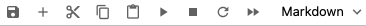
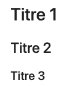

Markdown¶
Markdown est un langage de balisage léger pour formater un document, facile à lire, et facile à écrire.
Deux types de cellules¶
Dans un notebook Jupyter il y a deux types de cellules:
code (Python)
texte (Markdown)
Pour basculer entre code et texte utilisez le menu Code/Markdown dans la barre des menus.

Vous pouvez également utiliser les raccourcis
M pour Markdown
Y pour code
Attention: il faut être en mode command pour que les raccourcis fonctionnent.
Langage de balisage¶
En informatique, un langage de balisage permet d’enrichir l’information textuelle. L’inclusion de balises permet de changer l’apparence du document.
Un langage de balisage est appelé markup language en anglais.
Le texte contient des balises spéciales (=markup) pour formatter le texte.
HTML¶
Le plus célèbre des langages à balises est HTML. C’est le langage dans lequel les pages internet sont écrites. D’ailleurs le ML dans HTML est pour Hyper-Text Markup Langage
Voici un exemple de code HTML utilisant la balise <img>
<img src='https://upload.wikimedia.org/wikipedia/commons/thumb/4/48/Markdown-mark.svg/200px-Markdown-mark.svg.png'>
qui insère cette image dont l’originale se trouve sur Wikipédia.

et un autre exemple utilisant la balise <a>
<a href='https://fr.wikipedia.org/wiki/Hypertext_Markup_Language'>HTML sur Wikipédia</>
qui produit cet hyperlien
XML¶
C’est l’abréviation de eXtendend Markup Langage. Ce langage est utilisé par exemple pour le nouveau format des fichiers Microsoft Office:
Word (.docx)
Excel (.xlsx)
PowerPoint (.pptx)
Ou le X dans l’extension est pour Open XML
LaTeX¶
C’est un langage à balises pour représenter des formules mathématiques. Ce langage est très apprécié par les mathématiciens et scientifiques. Votre support de cours et vos exercices de maths ont certainement été écrits avec LaTeX.
Voici un exemple de code en LateX
$$ c = \sqrt[2]{a^2 + b^2} $$
qui produit
Markdown¶
Le mot Markdown est un jeu de mots de Markup.
Le mot down (bas, inférieur) se veut pour désigner une version simplifiée d’un langage Markup.
Souvent un ou deux symboles suffisent déjà pour la mise en format.
Titres¶
Vous pouvez créer des titres avec la balise hashtag # (alt+3 sur Mac).
# Titre 1
## Titre 2
### Titre 3
ce qui produit ceci

Styles¶
Les balises
astérisque simple (
*)astérisque double (
**)apostrophe arrière (
`)
entourent un ou plusieurs mots pour créer les styles
*italique*, **gras** et `code`
en produisant ce résultat
italique, gras et code
Listes¶
Le code Markdown
- item
- item
produit une liste à puces
item
item
Le code Markdown
1. item
1. item
produit une liste numérotée
item
item
Insérer un hyperlien¶
Pour insérer un hyperlien utilisez le code
[Lien vers le site Python](https://www.python.org)
ce qui produit
Insérer une image¶
Pour insérer une image utilisez le code

qui produit ceci

Le chemin vers l’image peut être
un lien local (une image dans le même dossier que votre notebook)
une URL (une adresse complète sur internet)